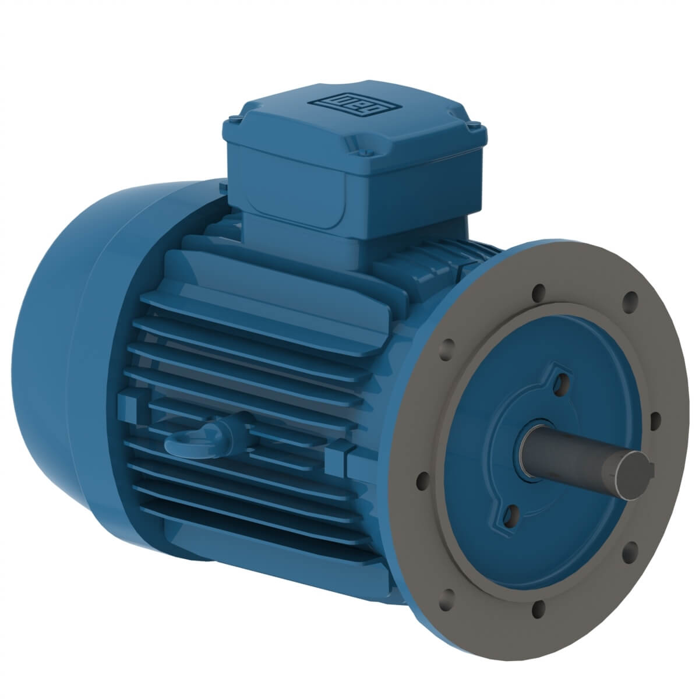
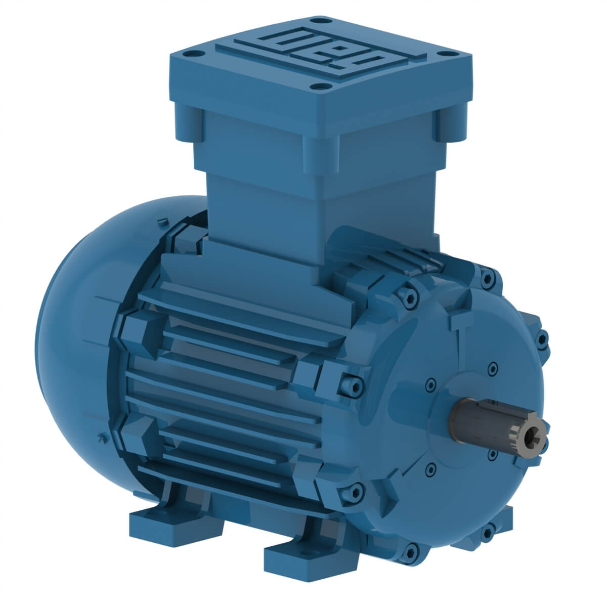
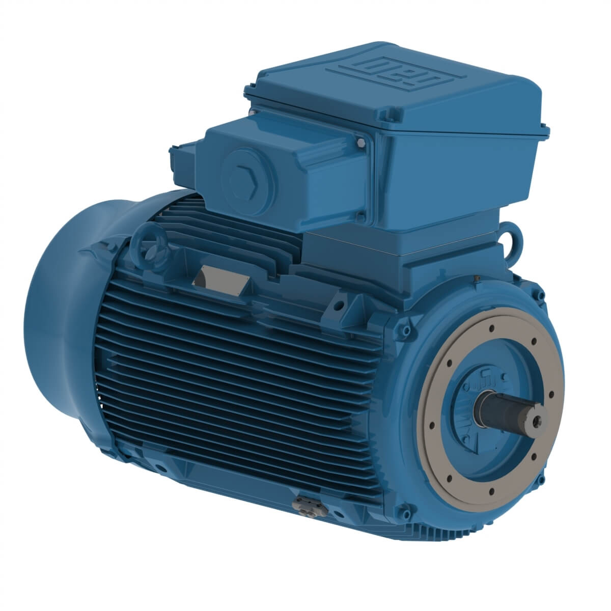

Motores eléctricos
Motor eléctrico W12
La línea W12 ha sido desarrollada para ofrecer versatilidad y eficiencia. Con bridas, pies, cajas y tapas de cajas de conexión en polímero industrial de alta resistencia y carcasa de aluminio sin mecanizado, el motor tiene el peso más bajo para aplicaciones robustas, lo que le confiere aún más posibilidades.
Catálogos y manuales
Motor eléctrico W21
Los motores de aluminio WEG W21 son el resultado de un alto diseño tecnológico, componentes de primera calidad y una amplia experiencia en aplicaciones. Reconocido por su calidad, fiabilidad y eficiencia. estos motores se utilizan en todo el mundo en una variedad de aplicaciones industriales.
Catálogos y manuales
Motor eléctrico W21Xdb
El W21Xdb es un motor a prueba de explosión proyectado especialmente para operar en ambientes con presencia de atmósferas explosivas. Presenta construcción robusta, sistema de retención de llamas con intersticios entre piezas cuidadosamente proyectados, mecanizado de precisión en la caja de conexión y tornillos con alta resistencia mecánica. Garantiza seguridad en áreas clasificadas como Zona 1 y Zona 2.
Catálogos y manuales
Motor eléctrico W22
Alto rendimiento con máxima eficiencia de energía, esto es el significado del nuevo motor eléctrico WEG. Alto rendimiento y bajo costo de propiedad durante toda la vida útil del motor, han sido la base para el desarrollo del W22. Un diseño creado para anticipar conceptos en rendimiento y ahorro de energía.
- Bajo costo operacional total
- Versatilidad
- Aplicaciones con convertidores
- Durabilidad
- Extensiones de la línea para el futuro